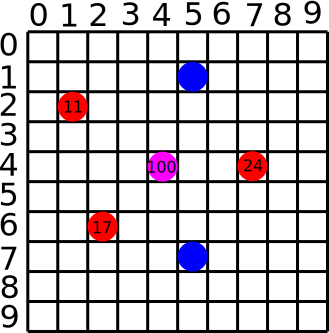
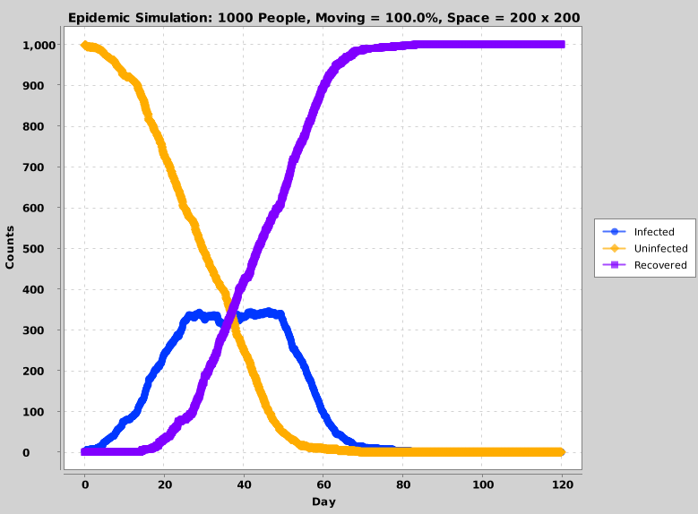
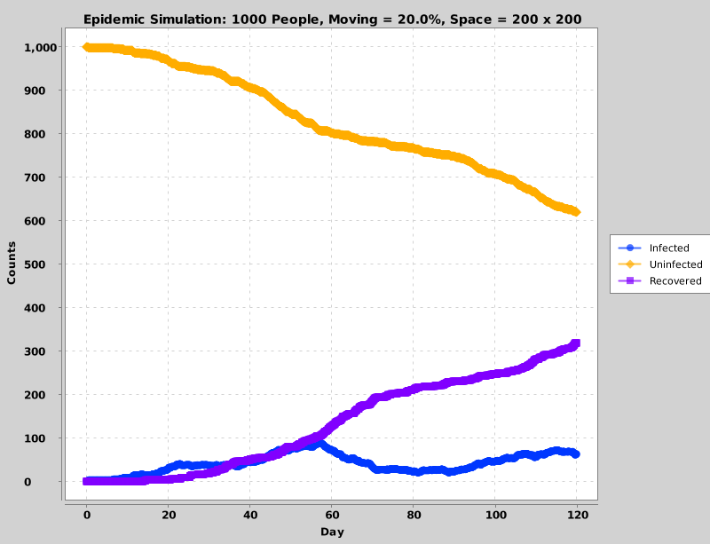

Lab 7: Epidemic Spreading / Flattening The Curve
Due Monday 3/23/2020
Inspired by this article in the Washington Post
Overview
We're all stuck away from campus during an extended spring break because of COVID 19. To make sure students don't get rusty on methods, loops, and arrays, I've created a lab that's super relevant to what's going on. Students will perform a Monte Carlo simulation of a model of a spreading epidemic. The model is very simple, but it is enough to illustrate the concept of "flattening the curve" (as you will see below) which is why we all need to practice social distancing. The simulation runs hour by hour in a loop, and each person is a dot which is either INFECTED, UNINFECTED, or RECOVERED. A certain amount of people are moving, and the rest stay still, based on parameters. As the simulation proceeds and each moving point follows a random walk, the following two rules apply
Rules
-
If a person who is
UNINFECTEDbecomes close enough to a person who'sINFECTED, they becomeINFECTEDas well. -
A person who has been
INFECTEDfor long enough becomesRECOVERED. ARECOVEREDperson does not get sick again, and does not infect anyone.
Code
The starter code for this assignment can be found at this link. You will be editing the updateInfections method of COVID19.java. Code has already been provided to loop through all steps in the simulation, apply random walks, and draw the points at each hourly timestep. (NOTE: The random walk code is very similar to the code we wrote together in class for a single point when we first discussed loops.)
There are two variables that will affect how you apply the rules when you fill in updateInfections:
dist: If an uninfected personiis less than or equal to this amount away in both its x coordinate and its y coordinate to an infected personj, then personibecomes infected.-
recoveryTime: If an infected person has been long for this amount of time, then they are recovered.
xcoords: A double array of the x coordinates of all peopleycoords: An array of the y coordinates of all peoplestates: An array of all peoples' states (the constants INFECTED/UNINFECTED/RECOVERED). For example,states[0] = INFECTED
would set the person at index 0 to be infected, and
if(states[i] == RECOVERED)
would check to see if the ith person had recovered.timeSick: An array of ints storing the amount of hours that each person has been sick. If the person has yet to be infected, this number is 0. If the person has recovered, this number stays fixed atrecoveryTime
Your job is to update the array of states and the array timeSick for all people, based on their current state, their position, and the recovery time.
Tips
- You should have a loop that loops through all of the people. You may assume that all of the arrays have the same length
- The
Math.abs()function for the absolute value may come in handy when you're determining if two x coordinates or two y coordinates are withindist. - For people who are uninfected, you will need a nested loop to check all other people to see if they are close enough to someone who is infected.
- Don't forget to add one to the amount of time an infected person has been sick
- You don't need to do anything to people who have already recovered.
Example 0: Grid Example
To warm us up, let's consider an example of 6 points on a grid, with a recovery time of 100, and then look at the corresponding arrays that are passed to the updateInfections method. The example grid is as follows:

From this, we see that we have the following groups of dots (where the numbers in the dots represent how long those dots have been infected)
- Three infected dots at locations (1, 2), (2, 6), and (4, 7). They have each been infected for 11 hours, 17 hours, and 24 hours, respectively.
- Two uninfected dots at locations (1, 5) and (7, 5)
- One dot at location (4, 4), which is recovered because it had already been infected for 100 hours.
From this, the arrays that the updateInfections method receives should look as follows (NOTE: They are in no particular order, but in this example I have put them in the order that I described them above)
Finally, let's look at an example of the distance computation. Let's consider the infected person at location (2, 6) and the uninfected person at location (5, 7). The distance between the two is \[ |2-5| + |6-7| = 3 + 1 = 4 \]
Example 1: Everyone Moving
Let's now look at what a working implementation of the code should yield as the simulation progresses. As an example, let's consider this code which is currently in the main function In this example, every single person in a population of 1000 people is moving. People who are uninfected are drawn as blue dots, people who are infected are drawn as larger red dots, and people who were infected but who have recovered are drawn as magenta dots. The simulation will look something like this (although it will be random every time)
The code pops up with the following plot at the end, which shows how many people were in each of the three states at each hour:
As we can see both in the simulation and in the graph, the number of infections explodes very quickly.
Example 2: Only 20% Moving
As another example, let's consider a scenario in which only 200 out of 1000 of people are moving The video simulation then looks more like this:
The code pops up with the following plot at the end for the above example:

As we can see both in the simulation and in the graph, the number of infections does not grow nearly as quickly, and the total number of people who are infected stays relatively flat. This is why overall "social distancing" leads to "flattening the curve. Even if some people do not follow the rules, it still keeps the number of cases manageable, and this can buy us valuable time to investigate vaccines and to study the illness.
What To Submit
You must submit the file COVID19.java to Canvas.
Other Things To Try
If you finish this and are interested in exploring more, here are some things you can try for fun:
- Try playing around with the number of people and the size of the grid and see what curves you come up with. To speed things up and to just see the curves in the end, you can set
drawto be false. - See what happens if more than one person starts off infected in different locations
- See what happens if you try to do a "lossy quarantine" of a square region; that is, start the infected person inside the square. Then, don't let people inside of the square leave, and don't let people out of the square enter, but a small percentage of the time let one through. Do we still need social distancing in this case?
- Add a feature so that people die with a certain probability before recovering. People who have died should not move or infect anymore, and they should be drawn in a different color.
- For those who know a little more math, it is often said that epidemics have exponential growth towards the beginning. Is that the case in this model? Why or why not?